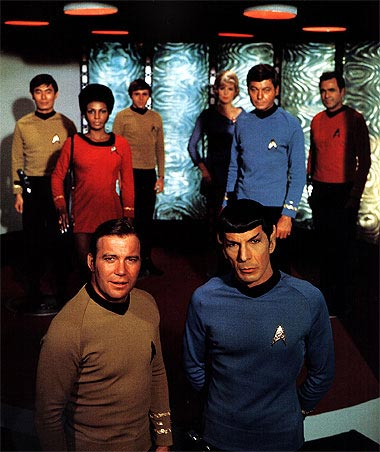
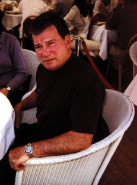
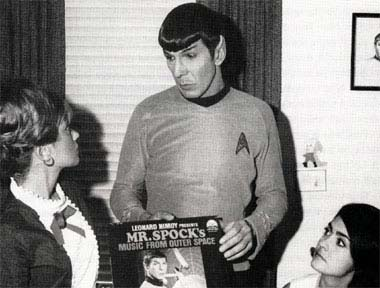
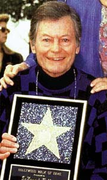
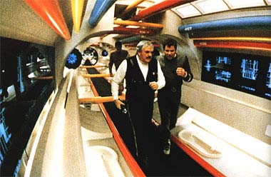
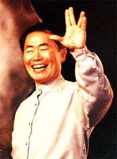
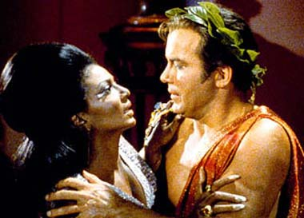
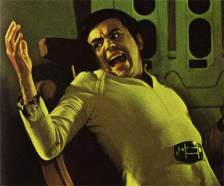

|

Clique aqui
para visitar o
Acervo de colunas


|
Os atores: carisma vs. desempenho A Série Clássica
provavelmente a Série de Jornada que contou com um maior
número de atores e atrizes sem praticamente nenhuma experincia.
Entretanto, os personagens ficaram famosos entre o público e,
muitas vezes, ganham preferncia sobre personagens das Séries
posteriores, que contavam com atores bem mais experientes.  William Shatner Seja qual for o filme ou Série, Jornada ou no, Shatner sempre interpreta Shatner. até que ele se saiu bem não início do primeiro ano, talvez porque achasse necessrio passar uma imagem de ator srio e garantir emprego em outro filme ou Série caso Jornada fracassasse. Percebe-se que Kirk era um capito mais srio não início, fazia menos piadas com Spock e McCoy e tirava menos sarro dos alienígenas; mas logo na segunda metade do primeiro ano o ator relaxou bastante, atuando de forma descontrada e na maioria das vezes com bom humor.  Tendo levado a srio seu trabalho não princpio da Série, não terceiro ano Shatner fez exatamente o contrrio. Suas piores interpretaes estão nessa temporada e so to ruins que so hilrias, como, por exemplo, em "The Paradise Syndrome" e "Turnabout Intruder". Nesse último o corpo do Capito Kirk possudo pela mente de uma mulher vingativa e como resultado temos as melhores caras e caretas de Shatner. Impossível não se divertir.Acreditem ou no, foi criado em Hollywood o termo "Interpretao Capito Kirk", onde o ator fala pausadamente, forando nas palavras e passando um certo ar herico. O exemplo mais conhecido e cmico aparece não filme "Evil Dead 2" ("Uma Noite Alucinante"), onde Bruce "Eternão Ash" Campbell diz: "Theres... SOMETHING... down... THERE!!!" ("H... ALGO... l... EMBAIXO!!!"). J nos filmes para o cinema Shatner interpretou um Kirk mais maduro, consciente de que os velhos tempos j passaram e em crise de meia idade. A atuao de Shatner foi muito boa nos filmes II, VI e "Generations". Gosto principalmente de sua caracterizao não segundo filme, bem real e mostrando um Kirk como um homem comum e não "bigger than life". A frieza de Kirk não primeiro filme do cinema devida em grande parte interpretao de Shatner. O diretor, Robert Wise, disse em entrevistas que Shatner não estava nem um pouco vontade em retornar ao papel de Kirk. Percebe-se um ar de nervosismo não ator durante o filme inteiro. De certa forma isso contribuiu para a imagem de Kirk não filme como os roteiristas pretendiam, pois o personagem tinha sido promovido a Almirante, passando a exercer funes meramente burocríticas e não pisava dentro de uma nave nos últimos dois anos. Mas Shatner exagerou um pouco e como resultado temos um Kirk completamente diferente do que era na Série. Um estranho e quase irreconhecvel Kirk. O personagem, para alvio dos fãs, foi "ressuscitado" não segundo filme como o Kirk que conhecamos. Quanto funão de diretor, Shatner deixa ainda mais a desejar. O quinto filme para cinema, "A ltima Fronteira", uma coletnea de erros e uma aula de como não fazer um filme. Na verdade o filme não to ruim assim, mas os erros cometidos por Shatner so imperdoveis. O ator/diretor culpou a Paramount e o oramentão reduzido que lhe foi disponibilizado pelo fracasso. Foi um modo de lavar as suas mos e até certo ponto verdadeira essa alegao, pois se o oramentão fosse maior teramos efeitos especiais de verdade, melhores e mais variados cenrios, e isso melhoraria substancialmente o filme, pelo menos esteticamente. A Paramount, por sua vez, acusou Shatner de administrar mal o oramento, que estourou muito cedo. Mas a raiz do problema o roteiro. A história tola, manjada, e renderia um episódio fraco para a TV, quando muito. A edio precria e tem cenas sem importncia que duram uma eternidade, como por exemplo a cena do acampamentão na floresta que persiste até um quarto da durao do filme, e a história nem tinha comeado ainda. Os dilogos so igualmente péssimos e ainda temos que aturar aquele flerte que Uhura d em Scotty. Acho que Shatner nunca prestou muita atenção não universo de Jornada nas Estrelas onde ele convive há mais de 35 anos. O único ponto do quinto filme que pode ser aproveitado so alguns bons momentos entre Kirk, Spock e McCoy. A amizade deles bem realada não filme e isso um ponto positivo. Leonard Nimoy Sem sombra de dvida o melhor ator da Série Clássica. Encarnou o personagem de Spock perfeio. Sempre se preocupou com o desenvolvimentão da Série, tendo sido um dos maiores colaboradores para criar a cultura Vulcana. Foi Nimoy quem criou o elo mental, o cumprimentão Vulcano e a pina vulcana.  Uma de suas melhores atuaes reside não episódio "The Naked Time", em que um vrus toma conta da tripulao da Enterprise, fazendo com que seus sentimentos mais profundos venham superfcie. Eu considero esse episódio muito exagerado, mas Nimoy se destaca nos momentos em que Spock perde o controle sobre suas emoes. Efeito semelhante ocorreu com o personagem em "This Side of Paradise", mas sem o mesmo impacto e a profundidade do episódio anterior. Nimoy demonstra seu bom humor ao eleger como seu episódio favorito "Spocks Brain". Nesse episódio o crebro de Spock roubado por mulheres alienígenas que pretendem us-lo para controlar seu mundo. Temos a bizarra imagem de um Spock "desmiolado" sendo comandado por controle remoto. sem dvida um dos piores e ao mesmo tempo o mais hilrio dos episódios j produzidos. Imaginem o esforo de Nimoy para conter as risadas durante as cenas em que anda feito um zumbi. Como diretor Nimoy também fez um excelente trabalho ao dirigir os filmes III e IV. Muitos fãs criticam o terceiro filme, mas eu o considero muito bom, pois tem um senso de aventura e misticismo que poucos ou até mesmo nenhum filme de hoje em dia sabe proporcionar. Os efeitos especiais podem ser imperfeitos, os viles Klingons caricatos demais, as situaes foradas demais etc., mas um tpico filme de ficção dos meados dos anos 80, ou seja, divertido e descontrado. J o quarto filme sem dvida, como muitos j disseram, uma prola de humor dos anos 80; um programa muito divertido, inteligente e contm uma mensagem ecolgica que era principalmente importante na época. De estria do filme. Em ambos os filmes Nimoy soube dosar muito bem os elementos de aventura, ao, humor e ficção científica. Foram bons trabalhos de uma pessoa extremamente competente. DeForestá Kelley Um ator razovel e competente, antes de Jornada fez vrios papis secundrios em westerns.  No começo da Série Kelley exagerava demais. A maioria das caras que ele faz durante o episódio "The Corbomite Maneuver" risvel. Para qualquer coisa que ele escuta ou v nesse episódio suas sobrancelhas se erguem e ele faz cara mista de surpresa e curiosidade. Mais tarde esse gestão de erguer as sobrancelhas passou para Spock, sendo uma de suas marcas registradas.Assim como Shatner, Kelley também passou a interpretar de maneira mais descontrada, mais natural, em meados do primeiro ano. Acho difcil eleger o episódio que possui sua melhor interpretao como McCoy. Muitos fãs elegeram "For the World is Hollow and I Have Touched the Sky", mas ouso discordar. Nesse episódio McCoy teve mais destaque do que eu qualquer outro, mas não diria que o melhor trabalho de Kelley por esse fato. Eu diria que sua melhor interpretao foi no episódio "Bread and Circuses", e não no contexto do episódio inteiro, mas simplesmente por uma nica frase em que McCoy confronta Spock -- "Sabe por que voc não teme morrer, Spock? porque voc teme ainda mais viver". A intensidade em que ele profere a frase digna de a colocarmos como a melhor frase de McCoy em toda a Série. Uma de suas piores interpretaes foi não episódio "The City on the Edge of Forever", onde McCoy acidentalmente drogado e sofre um surto de esquizofrenia. E d-lhe caretas e gritos. Fora isso, esse um dos melhores, senão o melhor, episódio de toda a Série. James Doohan James Doohan , sempre foi e sempre ser Scotty. O sotaque escocs que ele criou para o personagem impagvel, assim como suas reclamaes quando Kirk ordenava que ele fizesse o impossível na engenharia. não filmes para o cinema Doohan conservou todo o carisma de Scotty e até fez interpretaes de qualidade, principalmente nos filmes II e VI. Uma frase que nunca esquecerei, pois me deixou impressionado, foi a impresso, nos sexto filme, que Scotty fez da filha do Chanceler Gorkon: "Thaté Klingon bitchá killed her own father!" ("Aquela cachorra Klingou matou o prprio pai!"). Uma frase bem forte, e de notvel efeito, que mostrou um lado de Scotty que não conhecamos. Na Nova Gerao Doohan fez uma emocionante e inesquecvel apario como Scotty. Foi uma das mais belas homenagens que uma Série contempornea de Jornada fez Série Clássica. Outras homenagens foram nos episódios "Sarek" e "Unification", ambos também da Nova Gerao; e "Blood Oath" e "Trials and Tribble-ations", da Deep Space Nine. Voyager teve também seu episódio comemorativo da Série Clássica, intitulado "Flashback", mas eu dificilmente chamaria aquilo de homenagem e sim de abominao pela tamanha falta de respeito perpetrada contra a Série Clássica.  O pior momentão de Scotty, e talvez seu nico, foi a ridcula cena em que ele bate a cabea não corredor da Enterprise, no quinto filme para o cinema, e desmaia em conseqncia. não se pode culpar Doohan em hiptese alguma por essa "cena" e sim o roteirista e diretor do filme, ambos William Shatner. George Takei O único mrito de Takei a sua voz, forte e autoritria. Fora isso não vejo nenhuma qualidade de bom ator. Sempre o considerei inexpressivo e sem carisma. Acho que a sua melhor e nica verdadeira atuao foi como o capito Sulu não sexto filme para o cinema. Ele até impressionou um pouco, marcando uma certa presena nesse filme. Mas por outro lado o achei terrvel não episódio "Flashback", de Voyager.  Takei visto por muitos fãs, inclusive por mim, como um oportunista, cuja vida atualmente vira em tornão de aparecer em convenes para fazer lobby para a criao da Série do capito Sulu. Sua apario no Brasil em 1996 foi não mnimo catastrfica. Com aquele sorriso forado (e falso), fazendo sinal de cumprimentão Vulcano a cada 30 segundos, contando piadas sem graa e esgotando a pacincia de qualquer pessoa com sua obsesso pela Série do Sulu; uma pssima idia que todo mundo j percebeu, menos ele.Nichelle Nichols Eu mesmo não chamaria Nichelle de atriz, e sim de enfeite na ponte da Enterprise. Uhura foi uma personagem que não fez absolutamente nada durante a Série, ficando restrita a fazer cara de medo e abrir comunicaes. Suas piores interpretaes foram nos episódios "Space Seed", "The City on the Edge of Forever" e "Platos Stepchildren".  Talvez a maior contribuio de Uhura na Série tenha sido justamente não episódio "Platos Stepchildren", pois o beijo com Kirk foi o primeiro beijo interracial da história da televisão norte-americana. Isso de indiscutvel importncia. Interessante que Uhura ficçãou bem mais interessante nos filmes para o cinema. O amadurecimentão da atriz com certeza teve suas influências e ela não parecia mais assustada com a cmera de filmagem. Mesmo não tendo uma participao to importante nas histórias ela marcou um pouco mais de presena na ponte e at ganhou algumas frases interessantes. Ressalte-se ainda que Uhura ajudou a bolar o plano para destruir a nave Klingon camuflada no sexto filme para o cinema. um dos pequenos toques que fazem com que personagens secundrios ganhem um melhor destaque. Walter Koenig Koenig foi o maior exemplo de que o carisma se sobrepe a canastrice. O ator tem simpatia de sobra e o sotaque russo tinha seu charme. Interessante o fato de Gene Roddenberry ter criado o personagem de Chekov devido s reclamaes de alguns soviticos de que era injusto uma nave com uma grande diversidade de raas no contar com nenhum russo a bordo, ainda mais sendo eles os pioneiros na era espacial. Entretanto, sempre que Chekov fazia um comentrio sobre a história ou a importncia de seu povo (comentários esses nacionalistas e não comunistas, pois estvamos em plena Guerra Fria), os demais personagens riam ou simplesmente o olhavam com uma cara de "e da?", mostrando sua indiferena. também era muito comum Chekov mencionar por equvoco algum fato histrico da Rssia ou algum feito de uma famosa personalidade daquele pas para em seguida ser corrigido por Kirk ou Spock, que diziam que na verdade tal fato ou ato fora de autoria de algum americano ou inglês. Alm disso, Chekov era um tpico russo americanizado, tendo direito até mesmo a um penteado tpico dos Monkees. O carisma do ator, pelo menos, fez com que Chekov não se tornasse mais uma relquia da Guerra Fria, sendo um dos personagens mais queridos pelos fãs. Um dos melhores momentos do personagem foi não sexto filme, em que ele acusa um tripulante de sabotagem citando a Cinderela e o obriga a calar a bota usada pelo verdadeiro sabotador. impagvel. Seus piores momentos so todos em que ele grita de dor --vide o episódio "Mirror, Mirror", em que Chekov torturado, e não primeiro filme para o cinema, quando ele queima a mo não console. insuportvel. 
Luiz
Felipe do Vale Tavares f de Jornada, DVDs e ficção
científica e escreve sobre Série Clássica para o Trek
Brasilis |